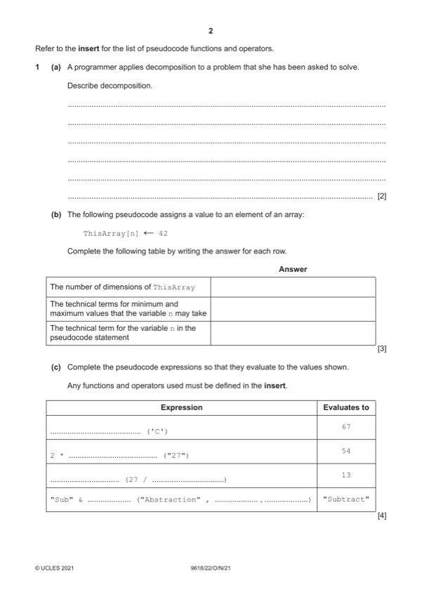

Question 1

Original paper page 2
Part 1(a) — solution
The process involves: 2
Mark points
- Include the ideas shown in the solution above.
Part 1 — solution
Breaking down a problem / task into sub problems / steps / smaller parts
Mark points
- Include the ideas shown in the solution above.
Part 1(b) — solution
Answer: 3
3
Answer
The number of dimensions of ThisArray 1
The technical terms for minimum and Lower bound, upper bound
maximum values that variable n may take
The technical term for the variable n in the Index / Subscript
pseudocode expression.
One mark per row
Mark points
- Correct result: 3
Part 1(c) — solution
Answer: 4
4
Expression Evaluates to
ASC('C') 67
Mark points
- Correct result: 4
Part 1(d) — solution
Answer: 2
2
Expression Evaluates to
PressureOK AND HiFlow FALSE
PumpOn OR PressureOK TRUE
NOT PumpOn OR (PressureOK AND NOT HiFlow) TRUE
NOT (PumpOn OR PressureOK) AND NOT HiFlow FALSE
Mark points
- Correct result: 2
Part 1 — solution
Procedure heading and ending, including parameters
Mark points
- Include the ideas shown in the solution above.
Part 1 — solution
Function heading and ending and return type
Mark points
- Include the ideas shown in the solution above.
Part 1 — solution
Call <any Set function> and check for -1 // check for no element set
Mark points
- Include the ideas shown in the solution above.